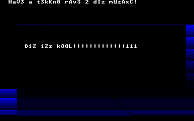
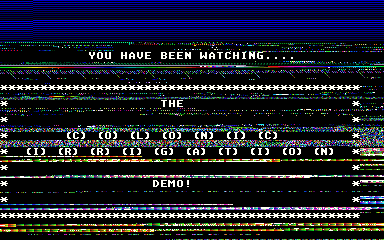

c0L0n1C 1rR1gAt10N!!!11
aTaR1 fAlC0n 0nLy!!!1!
Released: 9e Aug 1995 04:19!!!!
Also mirrored at

 This demo took a lot of coding time, and showcases a new effect never seen before. This demo is also in PHASE FOUR STEREO!
This demo took a lot of coding time, and showcases a new effect never seen before. This demo is also in PHASE FOUR STEREO!
That's what we said in the readme file accompanying the release of the demo. What it doesn't say is that it only really took a lot of coding time when you add up all the time we spent fooling around with our Falcon until we came upon the effect by accident, and then forgot about it! And it doesn't say exactly when the effect was never seen before, which was a long time before we actually did the demo!! In reality, we started coding "Colonic Irrigation" right after we finished Anal Tuck!
You see, we were waiting for the actual competitions in Fried Bits 3 to begin after we entered Anal Tuck and we saw that EKO had done a "water effect". (Which would later turn up in their EKO System demo.) Funnily enough, this looked very much like an effect we did the previous year when we were first fiddling about with coding effects on the Falcon!
At the time we thought our "water" effect looked shit, and forgot about it. When we saw EKO's version of our effect, we realised that the truth was that it didn't look shit, it's just that we were actually so ahead of everyone else, that it had only just come into fashion around about the time of Fried Bits 3, and only then did it not look shit!!! So we really were the first to do this effect, and not EKO!!!!
Now that the time was right for a "water effect" in a demo,we dusted off our old code for release. At the same time, Dame Vera Lynn was investigating Phase 4 Stereo techniques in order to put a new spin on the old Protracker module replays, and did the first ever full piece of music for a Senior Dads demo.
This demo was launched at the same time as this website!
